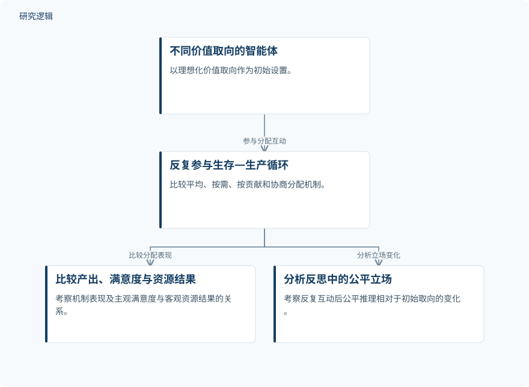

摘要解读
公平如何演化：多智能体资源分配中的价值取向与演变
When Fairness Evolves: Value Orientation and Evolution in Multi-Agent Resource Allocation
解读更新 2026-11-15 01:25 · 依据公开摘要整理，未核验全文细节
资源分配中的公平感，会不会随着反复互动而改变？这项研究用大语言模型多智能体模拟，考察分配规则、价值取向与公平判断之间的关系，也提醒我们：智能体更满意，并不等于它获得了更多资源，更不等于模型已经复现人类的公平行为。
文章目录
公平不仅关乎分到多少
平均分配、按需分配、按贡献分配与协商分配，体现了不同的公平标准。研究关注的并非只有哪种规则带来更多产出，还包括不同价值取向的智能体如何评价分配，以及这些评价是否会在持续互动中改变。
在生存—生产循环中比较分配规则
研究采用基于大语言模型的多智能体模拟，让具有不同理想化价值取向的智能体参与生存—生产循环，并比较平均、按需、按贡献和协商分配机制。分析涉及生产回报、主观满意度、客观资源结果，以及从智能体反思中提取的公平立场。
为提供以人类行为为参照的结构性比较，研究还将 GPT-4o 的选择与已发表的人类选择分布进行对照，比较范围是受控的资源分配情境，而不是现实社会中的长期互动。
依据摘要整理的资源分配模拟示意


概括摘要明确报告的模拟关系与分析对象，不代表论文原图，也不补充未报告的实验配置。
下载 SVG图示关系说明
实线表示相邻阶段的信息流，虚线表示跨阶段联系或反馈。
不同价值取向的智能体 → 反复参与生存—生产循环：参与分配互动；反复参与生存—生产循环 → 比较产出、满意度与资源结果：比较分配表现；反复参与生存—生产循环 → 分析反思中的公平立场：分析立场变化
协商表现较好，满意度却不等于资源收益
摘要报告，在主要设置中，协商分配取得最高的生产回报和主观满意度，同时形成最强共识；其主观层面的优势也在多个大语言模型中保持。这个结果提示，协商可能有助于处理公平与效率的权衡，但不能据此认定所有指标都已获得跨模型验证。
智能体的主观满意度与客观资源结果存在系统性错位，且受到价值取向和互动条件影响。随着互动持续，基于反思提取的公平立场逐渐偏离初始取向，转向结合平等、功绩与需求推理的混合表达。
在人类参照比较中，GPT-4o 与人类选择呈现中等程度的排序对应，但模型选择明显更加集中。因此，排序上的相似不能直接解释为选择分布一致，更不能替代对人类公平行为的直接证据。
模拟中的立场变化，不等于人类价值演化
摘要未交代独立重复次数、结果波动、效应大小，以及完整的模型配置和比较细节，因此仅凭当前资料无法判断统计稳健性与适用边界。人类选择数据的样本构成和具体情境内容，也需进一步阅读论文才能确认。
作者明确将这些发现定位为计算性假说。反思文本中的公平立场变化，不能直接证明智能体形成了稳定价值观；与已发表人类分布的比较，也不等于已经验证模型能够预测真实人群的公平行为。
阅读启发：把满意、收益与立场分开看
阅读启发：理解多智能体协作时，值得分别追问资源如何分配、参与者是否满意，以及它们如何解释公平。进一步阅读可重点查看这些指标的定义、反思立场的提取方式，以及协商优势在不同互动条件下的边界，而不宜只凭共识或满意度判断机制优劣。
以上为本站阅读启发与建议，不是论文已验证的结论。